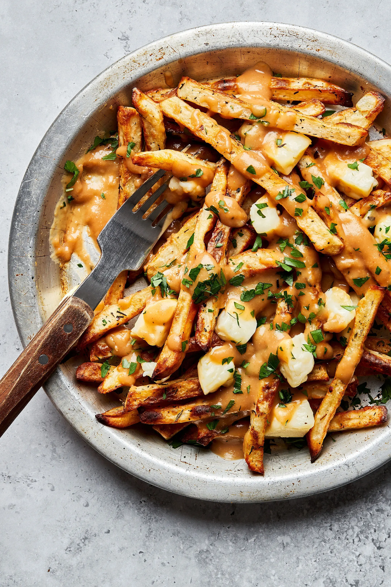

Poutine

Ingredients:
- Potato
- Vegetable oil
- Beef Gravy
- Cheese curds
How to make:
- Heat oil in a deep fryer or deep heavy skillet to 365 degrees F (185 degrees C).
- While the oil is heating, begin to warm gravy
- Place fries into the hot oil, and cook until light brown, 8 to 10 minutes. Cook fries in batches if necessary to allow them room to move a little in the oil. Remove to a paper towel-lined plate to drain
- Place fries on a serving platter, and sprinkle cheese over them. Ladle warmed gravy over the fries and cheese, and serve immediately.
Back to Odin Recepes